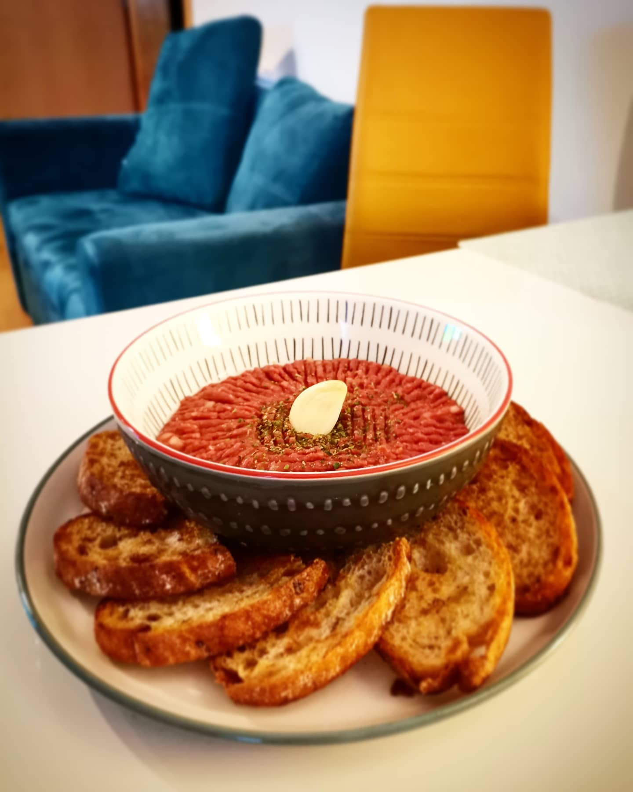

Tatársky biftek podľa @petra.grecova — Normy Jedál
Tataráčik🤤 Pre mňa ako mäsožravca absolútna dokonalosť ❤️ A ako to máte vy? Jedli (by) ste surové mäso? 🤭
#steaktartare #meat #beef #meatlover #toast #garlic #food #instafood #foodlover #foodstagram #yummy #dinner #tatarak #tatarskybiftek #maso #hrianky #topinky #cesnak #vecera #jedlo #dnesjem #dennikmatky